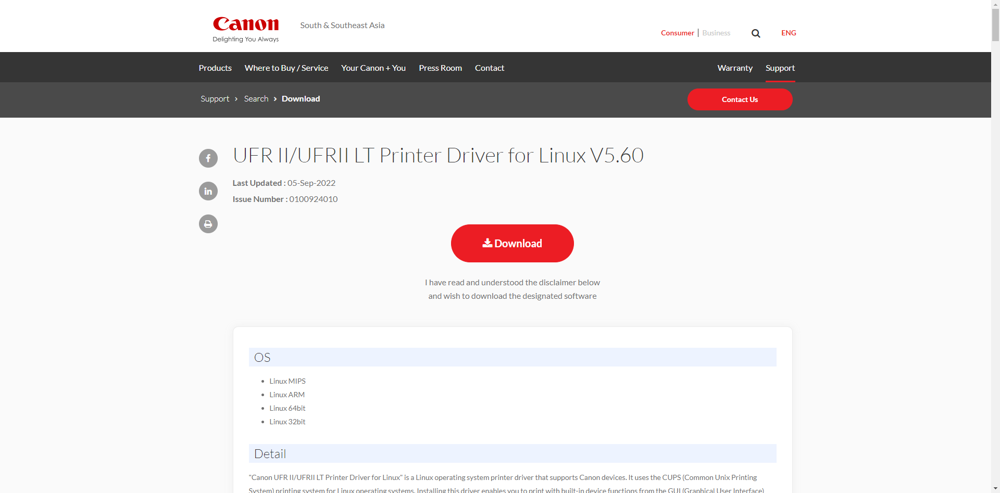

Создание ярлыка запуска(сеть)
Для создания ярлыка(кнопки запуска) необходимо нажать ПКМ по рабочему столу
Вбиваем произвольное имя ярлыка, и команду: simple-scan " "

Теперь необходимо найти данный сканер в нашей сети.
scanimage -L
В данном случае один принтер определяется сразу 2 видами драйверов Apple - AirScan, eSCL и HP - hpaio
Для сети необходимо выбрать c ip адресом и тот что быстрее.(не всегда фирменный сканер будет быстрее нежели аналоговый).
Необходимо скопировать всю строчку в одинарных ковычках: 'Найденный сканер в сети'
Пример как должно получиться:

После запуска ярлыка у нас будет автоматически выбран сканер:

Если стоит МФУ и пользователю необходимо сканировать из автоподатчика, то необходимо выбрать его в параметрах:

В ИНОМ СЛУЧАЕ ВЫЙДЕТ ОШИБКА ЧТО НЕ УДАЛОСЬ СВЯЗАТЬСЯ С ПРИНТЕРОМ
Также необходимо убедиться что параметры страницы заданы верно, иначе будет сканировать в нестандартном формате.
Canon
Устанавливаем linux-UFRII Driver для Linux

Распаковываем в любое место, открываем терминал в папке драйвера и запускаем bash скрипт.
./install.sh
Если выдаст ошибку, то необходимо выдать права для install.sh
chmod +x install.sh
Настройка I-SENSYS mf426dw (Сеть)
Для установки принтера после запуска скрипта необходимо выбрать его в предлагаемом каталоге.


Если не получается установить драйвер печати/сканера устанавливаем Capt Driver для Linux

Samsung

Kyocera
Качаем драйвера(обозначается как Linux Universal Driver) в некоторых случаях также будут доступны PPD файлы(обозначается как SANE driver) официальная страница Kyocera
Настройка TASKalfa 7002i (Сеть)
Для установки необходимо скачать Universal Driver (в ней будет лежать папка для Fedora), SANE (PPD драйвера) и дополнительный драйвер для печати.

В папке должны остаться только эти файлы и папки:

Переходим в папку Fedora и следуем до пути с установкой RPM файла
dnf install kyodialog-* -y

Теперь переходим в корневую папку и устанавливаем kyocera-sane-2.0
dnf install kyocera-sane-* -y
Устанавливаем по стандартному сценарию сетевой принтер, как только необходимо будет установить основной драйвер для печати выбираем наш PPD файл:
HP
До установки плагина:

После установки плагина:

Для работы МФУ/принтера необходимо установить библиотеку и плагин
Установка библиотеки
dnf install hplip-gui python3-distro -y
Установка плагина для сканирования
Для начала перейдем к скачиванию самого плагина на официальный сайт hp
Для корректной работы необходимо скачать плагин версии: hplip-3.21.2-plugin.run

Открывается файл в браузере, теперь его необходимо правильно сохранить

Необходимо удалить на конце формат .txt иначе файл не будет отображаться при установки самого плагина.
Должно получиться: hplip-3.21.2-plugin.run
Теперь необходимо запустить терминал из под пользователя, либо в существующем терминале выходим из под su:
exit
/usr/bin/hp-plugin

Если плагин уже установлен, его можно переустановить:

Ставим на второй чекбокс и выбираем файл:


При повторной переустановке может возникнуть данная ошибка:
Вводим пароль от учетной записи или пароль от root в зависимости от того что будет написано в Username:
После этого зависнет приложение и в терминале будет проходить процесс инсталяции:

Установка принтера
Заходим в настройки принтера HP
Выбираем метод подключения к принтеру, в моем случае принтер размещен в локальной сети

Стандартно ищется по SLP, поэтому чаще всего возникает ошибка о том, что не удалось найти принер
Для корректного поиска необходимо выбрать mDNS/Bonjour если поддерживается на устройстве(можно включить в настройках самого принтера) или же просто найти по ip-адресу.

Выбираем принтер, установка завершена.